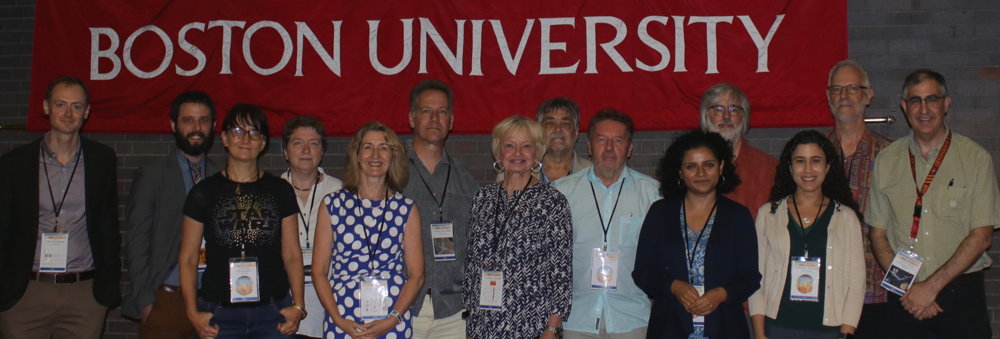
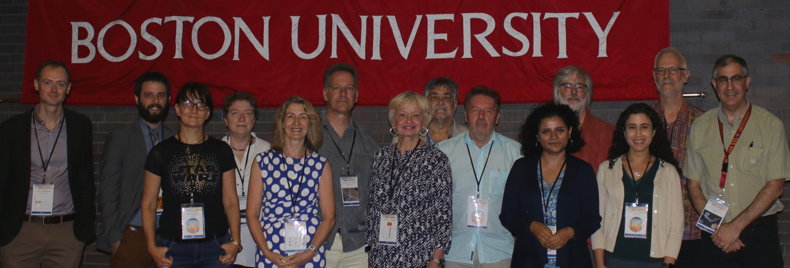

July 29 - Aug 3 2018, Boston / Cambridge, USA
The "Cambridge Workshops of Cool Stars, Stellar Systems and the Sun" are held biennially and have evolved to be the premier conference series for cool star research.
Registration opens Sunday on 5:30 pm and Monday-Friday at 8:00 am. See our note about construction in the area which will impact you if you take a taxi, uber or even public transport.
- July 29: CIAO workshop / ExoPAG 18
- July 29 to Aug 3: conference
- Aug 4: Hack day
What is "Cool Stars"?
The Cambridge Workshop on Cool Stars, Stellar Systems, and the Sun ("Cool Stars") has been running for 37 years. The first workshop was held in Cambridge, Massachusetts in 1980. Since then, Cool Stars has been held largely biennially, alternating between North America and Europe, where approximately 400 international experts in Low-Mass Stars, Solar Physics, and Exoplanets meet to exchange ideas in a cross-disciplinary and friendly environment.
Four institutions in the Boston area (Boston University, Harvard-Smithsonian Center for Astrophysics (Harvard College Observatory / Smithsonian Astrophysical Observatory), MIT, and University of Massachusetts Lowell) jointly organize Cool Stars 20 which will be held at Boston University in Boston/Cambridge, MA from July 29 to August 03, 2018.
SOC
To contact the SOC or LOC write to: cs20@cfa.harvard.edu
- Silvia Alencar - UFMG
- Fabienne Bastien - Penn State
- Sarbani Basu - Yale
- Chas Beichman - JPL
- Svetlana Berdyugina - leibniz-kis
- Angela Bragaglia - INAF- Bologna
- Paul Charbonneau - U. Montreal
- Ofer Cohen - U Mass Lowell
- Charlie Conroy - Harvard
- Andrea Dupree - SAO
- Catherine Espaillat - BU
- Gregory Feiden - UNG
- Lindsey Glesener - U. Minn
- Suzanne Hawley - University of Washington
- Dave Huenemoerder - MIT
- Gaitee Hussain - ESO
- Moira Jardine - University of St. Andrews
- Adam Kowalski - NSO
- Phil Muirhead - BU
- Jürgen Schmitt - University of Hamburg
- Kazunari Shibata - Kyoto University
- John Stauffer - IPAC – CalTech
- Gerard van Belle - Lowell Observatory
- Scott Wolk (chair) - SAO
LOC
To contact the SOC or LOC write to: cs20@cfa.harvard.edu
- Rana Ezzeddine - MIT
- Moritz Günther (chair) - MIT
- Jenine Humber - CfA
- Nishu Karna - CfA
- Aurora Kesseli - Boston University
- David Principe - MIT
- Sam Quinn - CfA
- Benjamin Roulston - Boston University
- Carl Schmidt - Boston University
- Julie Skinner - Boston University
- Anastasiia V Uvarova - MIT
- Mark Veyette - Boston University
- Jen Winters - CfA
Organizing Institutions

Sponsors

Code of Conduct
The Cool Stars 20 organizers are committed to making this meeting productive and enjoyable for everyone, regardless of gender, sexual orientation, disability, physical appearance, body size, ethnicity, nationality, or religion. We will not tolerate harassment of participants in any form. Please follow these guidelines:
- Behave professionally. Harassment and sexist, racist, or exclusionary comments or jokes are not appropriate. Harassment includes sustained disruption of talks or other events, inappropriate or unwelcome physical contact, sexual attention or innuendo, deliberate intimidation, stalking, and photography or recording of an individual without consent. It also includes offensive comments related to gender, sexual orientation, age, disability, physical appearance, body size, ethnicity, or religion.
- All communication should be appropriate for a professional audience of people from many different backgrounds. Sexual language and imagery is not appropriate.
- Be kind to others. Do not insult or put down other attendees.
Participants asked to stop any inappropriate behaviour are expected to comply immediately. Attendees violating these rules may be asked to leave the event at the sole discretion of the organizers without a refund of any charge. The full Cool Stars 20 Code of Conduct is available as pdf.
Any participant who wishes to report a violation of this policy can do so anonymously via google web form or can contact LOC representatives David Principe or Julie Skinner (see CS 20 Code of Conduct for contact information).
This code of conduct was originally designed for an astronomy conference in London, adapted by Andrew Pontzen and Hiranya Peiris from a document by Software Carpentry, which itself derives from original Creative Commons documents by PyCon and Geek Feminism.
If you prefer to speak to someone who is not affiliated with the CS20 conference organizers, we encourage you to talk to Astronomy Allies. Several members of this group happen to attend the CS20 meeting.
Acknowledgements
- Artwork: Kristin Ann Divona
- Website template design by Veselka for andreasviklund.com
- Website development on github
Previous Meetings
We are looking for a Cool Stars 21 host! Please see below.
- CS 19 - Uppsala, Sweden, June 2016
- CS 18 - Flagstaff, AZ, USA, June 2014
- CS 17 - Barcelona, SPAIN, June 2012
- CS 16 - Seattle, WA, USA, August 2010
- CS 15 - St Andrews, United Kingdom, July 2008
- CS 14 - Pasadena, CA, USA, November 2006
- CS 13 - Hamburg, Germany, July 2004
- CS 12 - Boulder, CO, USA, July 2001
- CS 11 - Tenerife, Spain, October 1999
- CS 10 - Cambridge, MA, USA, 1997
- CS 9 - Florence, Italy, 1995
- CS 8 - Athens, GA, USA, 1993
- CS 7 - Tucson, AZ, USA, 1991
- CS 6 - Seattle, WA, USA, 1989
- CS 5 - Boulder, CO, USA, 1987
- CS 4 - Santa Fe, NM, USA, 1985
- CS 3 - Cambridge, MA, USA, 1983
- CS 2 - Cambridge, MA, USA, 1981
- CS 1.5 - NATO Advanced Study Institute, Bonas, France, 25 Aug - 5 Sep 1980
- The original CS (later renamed CS 1) - Cambridge, MA, USA, Jan 1980
Cool Stars 21
Cool Stars is a lot of fun to attend and also a lot of fun to host. If you and your institution would like to host Cool Stars 21 please fill out the following application by June 15. The location must be outside of the United States since we alternate continents in successive meetings. Your application will be reviewed by the SOC and you will be invited to discuss the meeting details with the SOC during Cool Stars 20. The selection will be announced at the Banquet Thursday August 2, 2018.To apply, please email a pdf file with answers to the following questions to Scott Wolk, chair of the CS20 SOC, at cs20@cfa.harvard.edu. In your application please discuss the following items:
- Host Institution(s)
- Lead scientist(s)
- contact details: Name, address, email, fax; other supporting scientists
- Proposed Dates of Meeting
- Proposed Site of Meeting
- Meeting/Facility considerations (Hotel, conference center, observatory? Size of meeting?)
- Transportation considerations (Airports, public transportation, travel time, ease of access etc.)
- Rooming/Hotel considerations (Range of facilities/cost)
- Experience of the Host Institution and Lead scientists in running scientific meetings
- Potential Sources of financial support in addition to registration fees
- Why should CS 21 be held here?
- Projected science themes for CS 21
- Anything else we should know?
Submissions received by June 15, 2018, will receive first consideration.
© 2017 CS20 LOC